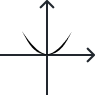
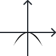

f(x) = ax² + bx + c, gdzie a, b, c ∈ R i a ≠ 0
f(x)=a(x−p)²+q, gdzie a, p, q ∈ R i a ≠ 0
f(x)=a(x−x1)(x−x2), gdzie: a ≠ 0
Równanie postaci ax + bx2+ c = 0, gdzie a, b, c ∈R oraz a ≠0, nazywamy równaniem dwukwadratowym
Co robi a?
Co robi b?
Co robi c?
Współczynnik a decyduje o kształcie paraboli
Współczynnik b określa położenie wierzchołka wzdłuż osi x
Współczynnik c decyduje położenie paraboli wzdłuż osi y
00:00
Czas mija, a ty nadal nie zacząłeś uczyć się funkcji kwadratowej
xv = -b / 2a
yv = f(xv)
Δ = b² - 4ac
Δ > 0, dwa rozwiązania
Δ = 0, jedno rozwiązanie
Δ < 0, zero rozwiązań
a > 0
a < 0
a > 0, to oznacza, że parabola jest otwarta w górę
a < 0, to oznacza, że parabola jest otwarta w dół

